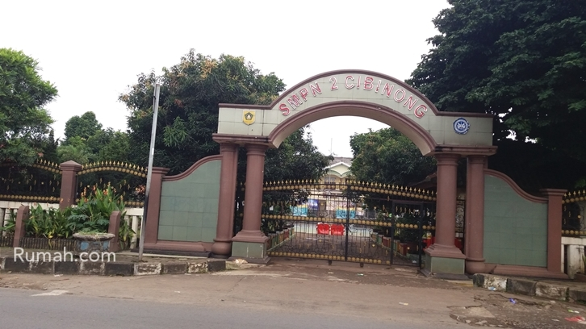

Pertama kali saya mengenyam pendidikan di TK Bambu Kuning kemudian setelah 1 tahun mengalami masa pendidikan di taman kanak-kanak kemudian saya melanjutkan sekolah dasar di SDN Bambu Kuning kedua sekolah ini berada di tempat yang sama yaitu di Btn Bambu Kuning,Bojonggede Bogor setelah 6 tahun saya bersekolah di sini saya pun lulus pada tahun 2013 dan saya melanjutkan studi saya di SMPN 2 Cibinong kemudian pada tahun 2016. Semenjak kelas 8 smp saya sangat ingin bersekolah di SMAKBO dan akhirnya alhamdulillah saya bisa lolos tes SMAKBO dan saat ini saya sedang bersekolah di SMK-SMAK Bogor yang beralamat di Jalan Binamarga 1 Ciheuleut Baranangsiang.Kini saya sedang duduk di bangku kelas 11

Sejak kecil saya memiliki hobi membaca komik,komik yang saya suka adalah komik Hai Miiko,Doraemon dll pokoknya saya lebih suka komik yang bersuasana Jepang dibandingkan komik Indonesia selain itu saya juga suka jalan jalan ke tempat yang belum pernah saya kunjungi sebelumnya saya lebih suka ke tempat atau daerah dengan objek wisata alam dibandingkan wahana permainan, sewaktu masih kecil saya juga sangat suka mengkoleksi boneka barbie , menurut saya boneka barbie itu cantik dan lucu jadi saya sangat menyukainya.kalau sedang bosan saya juga hobi mendengarkan lagu , untuk lagu saya lebih menyukai lagu indonesia dan barat ketimbang lagu korea karna menurut saya pribadi bahasa indonesia dan inggris lebih mudah dipahami ketimbang bahasa korea.